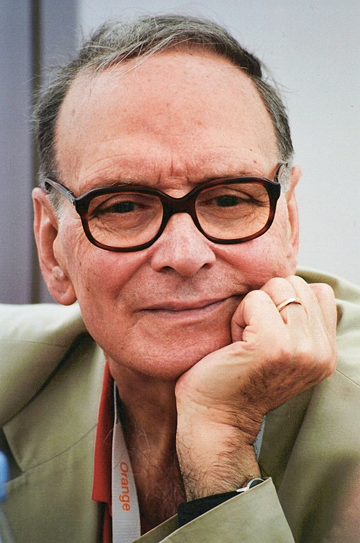

Ennio Morricone
Ennio Morricone est un grand compositeur italien, des années 50-60. Né en 1982 - décèdé en 2020. Il était compositeur, musicien, producteur, arrangeur et chef d’orchestre. Il a produit la musique de plusieurs films dont celui de : Il était une fois dans l'Ouest,1968.
Festival de Cannes, 2007»
Réalisateur
Musique
Présentation de la musique créée par le compositeur : C’est une musique triste, lente, ennuyeuse, mais qui s’accorde parfaitement au film, car de plus le son a été fait avant le film pour une coordination parfaite de l’histoire. Leone a écrit et réaliser toutes les musiques présente dans le film. Ils sont enregistrer leur musique avant le tournage.
(L'homme à l'harmonica), 1968»
Synopsis
Il était une fois dans l'Ouest (titre original : C'era una volta il West) est un western spaghetti italo-américain de Sergio Leone réalisé en 1968, sorti en salle en Italie la même année et en 1969 dans le reste du monde. L'action du film se passe lors de la conquête de l'Ouest américain. Il évoque l'âpre rivalité des intérêts pour l’appropriation des terres que traverse la construction du chemin de fer et met en scène différents personnages représentatifs des westerns classiques pour mieux les détourner.